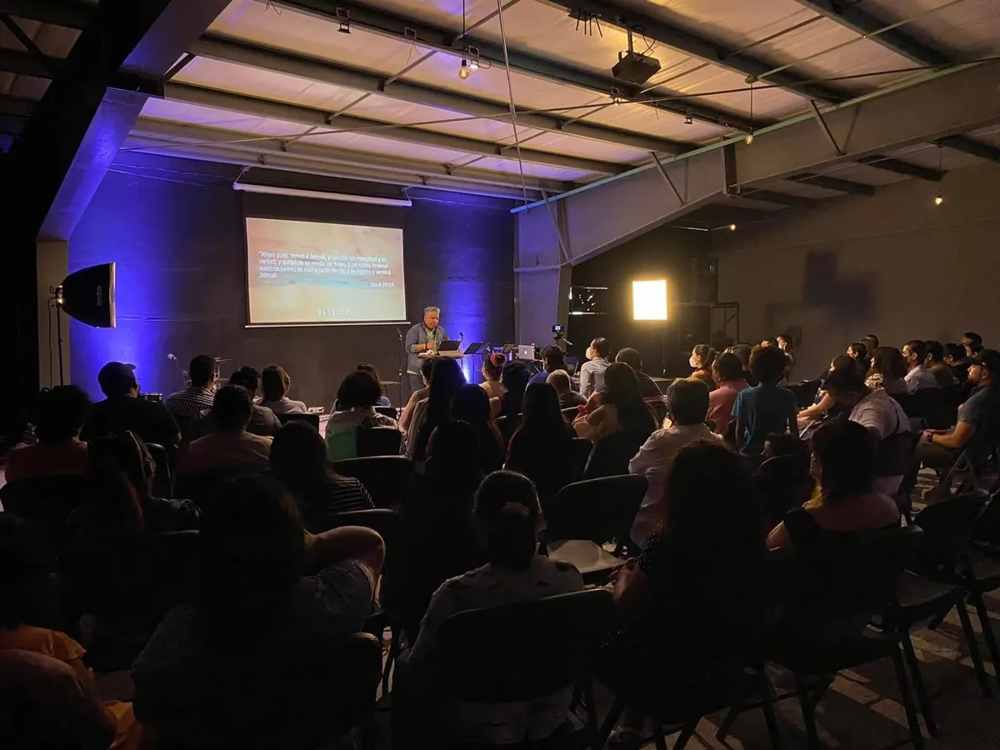
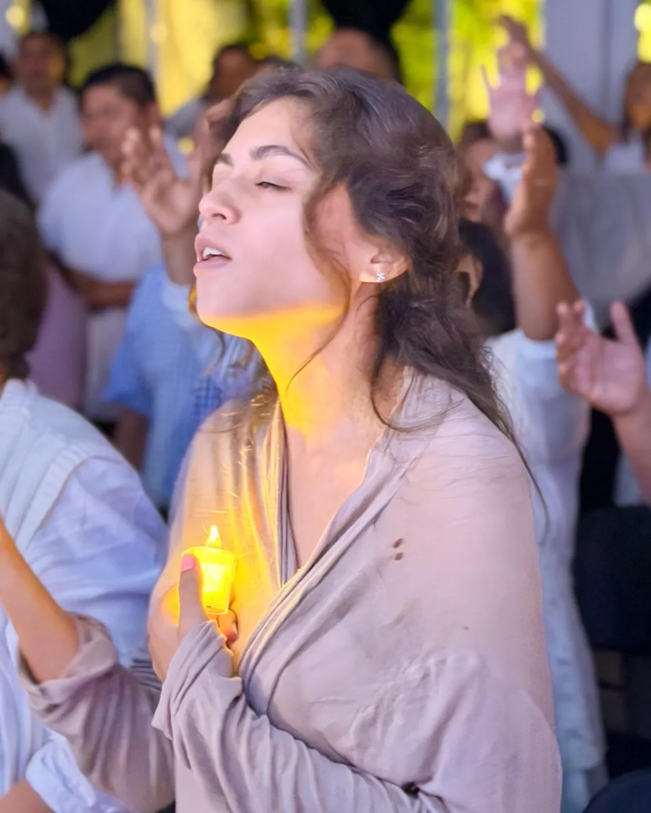

// congreso · 1ª edición
El Cielo en mi Ciudad
Tres días para mirar tu ciudad desde más arriba — y decidir qué vas a construir en ella.
- Fecha
- 14–16 de agosto
- Sede
- Mérida, Yucatán
- Cupo
- 300 lugares
Tres días para mirar tu ciudad desde más arriba — y decidir qué vas a construir en ella.
Antes de liderar hay que reconocer el diseño original. Ahí empieza todo lo demás — no en la agenda, no en el cargo.
Capacidad y talento alineados a algo más grande que tú. De saber quién eres, a saber para qué.
Una ciudad no cambia por accidente. Cambia porque alguien decidió construirla — y decidió no hacerlo solo.

Encabeza una red de más de 150 iglesias en 6 países. Docente permanente en un seminario de formación pastoral con 33 ediciones consecutivas y más de 800 pastores y líderes atendidos.
Integra el equipo pastoral del seminario y viaja junto a Ofir Peña visitando las iglesias de la red. Rigor y calidez en la misma mesa.
Carpa · Comunidad Más Alto — Mérida, Yucatán.
El congreso nace de la vida real de Comunidad Más Alto en Mérida — la casa que abre sus puertas del 14 al 16 de agosto.





Son 300 lugares. Escríbenos y una persona del equipo confirma el tuyo por WhatsApp.
Un mensaje basta — del otro lado te responde gente de la comunidad, no un formulario.
Apartar mi lugar por WhatsAppAparta tu lugar directamente con el equipo de la comunidad, o escríbenos por Facebook.
Este sitio no pide ni guarda datos personales.